Mục đích
Hướng dẫn này mô tả quy trình ghi nhận công việc dịch vụ theo ba tầng: Ticket (phiếu hỗ trợ — có thể gắn nhiều khách hàng) → Service Job (công việc cụ thể — chọn một khách hàng trong danh sách của Ticket) → Service Time (giờ làm việc của kỹ sư).
Một Ticket có thể có nhiều Service Job; mỗi Service Job có thể có nhiều Service Time. Danh sách CSE được thu hẹp dần theo từng tầng để tránh gán nhầm người không thuộc ca làm việc.
Quan hệ dữ liệu
└─ Service Job (gắn Ticket; kỹ sư trên job phải nằm trong danh sách CSE của Ticket; chỉ job Preventive Maintenance bị kiểm tra Plan Start/End trong phạm vi ngày plan của Ticket khi Ticket đã nhập đủ hai ngày)
└─ Service Time (gắn Service Job; kỹ sư ghi giờ phải nằm trong danh sách CSE của Job)
Sau khi lưu Ticket, mở lại phiếu để thấy khu vực Connections → Service Job (số badge = số job đã tạo) và nút + để thêm job mới từ Ticket.
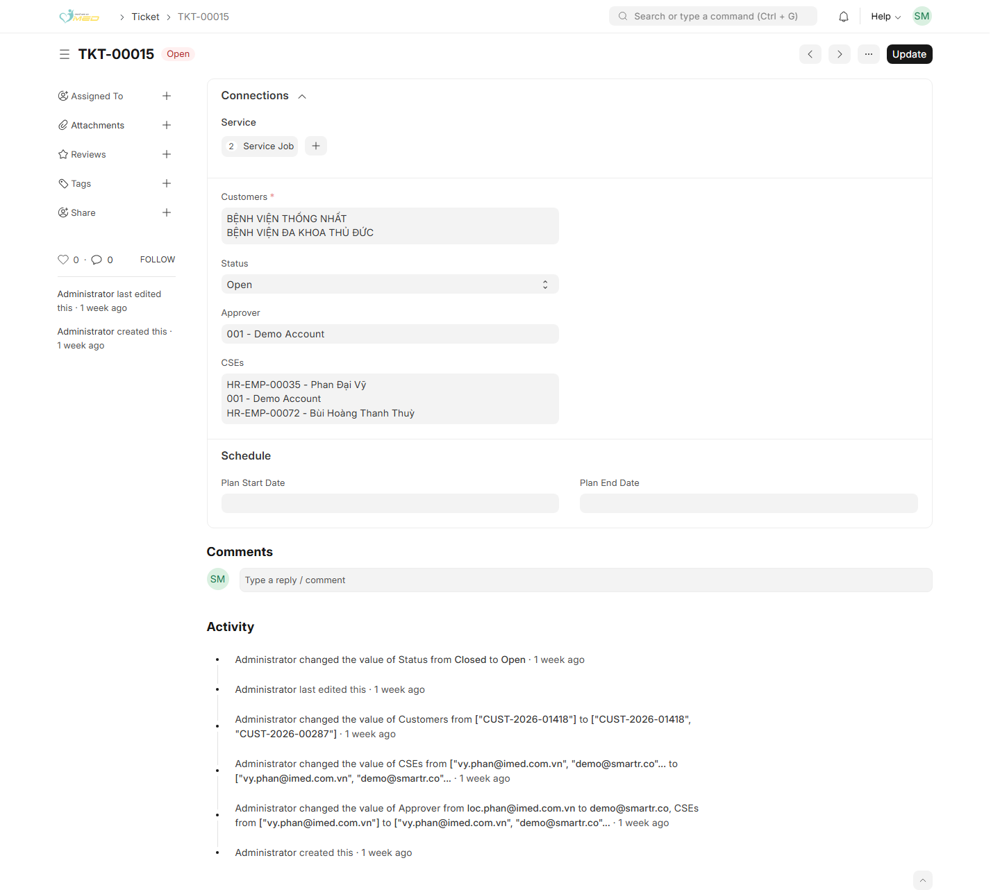
Vai trò & phân quyền
Phân quyền trên workspace Support được áp dụng theo từng phiếu (Ticket, Service Job, Service Time), không chỉ theo vai trò đăng nhập. Nếu bạn không thấy nút Save hoặc form ở chế độ chỉ đọc, đó là do bạn không có quyền sửa phiếu đó — không phải lỗi trình duyệt.
Các cột dưới đây dùng ký hiệu: Có = toàn quyền trên loại phiếu đó; Chỉ xem = mở form/danh sách nhưng không lưu; Có điều kiện = chỉ khi thỏa điều kiện ghi trong ngoặc.
iMED Service Admin — Quản trị vận hành dịch vụ
Giống Service Manager trên nghiệp vụ Support (Ticket, Service Job, Service Time, Instrument, Task, Maintenance…), nhưng không mở Service Job Report / Service Time Report.
- Ticket, Service Job, Service Time, Instrument — toàn quyền như Manager.
- Báo cáo — Không (liên kết workspace có thể hiện nhưng hệ thống từ chối khi mở trang).
iMED Service Manager — Quản lý dịch vụ
Vai trò điều phối: mở phiếu hỗ trợ, gán khách hàng / CSE / người duyệt, giám sát job và báo cáo.
- Ticket — Xem tất cả; tạo, sửa, xóa (Customers, Status, Approver, CSEs, …).
- Service Job — Xem tất cả; tạo, sửa, xóa mọi job (Customer trên job, CSEs, Schedule, Job Type, Job Status, …).
- Service Time — Xem tất cả; tạo, sửa, xóa mọi bản ghi giờ.
- Instrument — Toàn quyền theo cấu hình dịch vụ (tạo/sửa thiết bị nếu được cấp thêm quyền ERP).
- Báo cáo — Truy cập Service Job Report và Service Time Report (Report & Dashboard).
iMED Service Leader — Trưởng nhóm dịch vụ
Vai trò triển khai hiện trường và thường được chọn làm Approver trên Ticket. Leader cũng có thể nằm trong CSEs của ticket.
- Ticket — Chỉ xem ticket mà bạn là Approver hoặc có tên trong CSEs. Sửa / lưu ticket chỉ khi bạn là Approver trên ticket đó (thêm/bớt Customers, CSEs, đóng ticket, …). Không tạo ticket mới, không xóa ticket.
- Service Job — Xem tất cả job; tạo, sửa, xóa mọi job; đổi Job Status trên bất kỳ job nào.
- Service Time — Xem tất cả; tạo, sửa, xóa mọi bản ghi giờ (kể cả của CSE khác).
- Instrument — Toàn quyền theo cấu hình dịch vụ (tương tự Manager).
- Báo cáo — Truy cập Service Job Report và Service Time Report.
iMED Service User — Kỹ sư dịch vụ (CSE)
Vai trò thực hiện công việc và ghi giờ. User không quản lý nội dung Ticket (khách hàng, approver, danh sách CSE cấp ticket).
- Ticket — Chỉ xem ticket có tên bạn trong CSEs (Customers / CSEs hiển thị dạng danh sách, không sửa). Không tạo, sửa, xóa ticket.
- Service Job — Xem danh sách tất cả job. Tạo job mới (chọn Ticket đọc được, Customer trong phạm vi ticket, CSEs ⊆ CSEs của ticket). Sửa / xóa job chỉ khi bạn nằm trong CSEs của job đó . Job Status — đổi Open/Close chỉ trên job bạn được giao (CSE / Secondary CSE); các trường khác vẫn theo quyền sửa job.
- Service Time — Xem tất cả bản ghi. Tạo giờ mới. Sửa / xóa chỉ bản ghi mà CSE Name = chính bạn.
- Instrument — Chỉ xem / chọn trên form (không tạo/sửa master thiết bị).
- Báo cáo — Không mở Service Job Report / Service Time Report (dù vẫn tạo job và ghi giờ trên form).
Bảng tóm tắt
| Đối tượng | iMED Service Manager | iMED Service Admin | iMED Service Leader | iMED Service User |
|---|---|---|---|---|
| Ticket — xem | Tất cả | Tất cả | Có điều kiện (Approver hoặc trong CSEs) | Có điều kiện (trong CSEs) |
| Ticket — tạo / sửa / xóa | Có / Có / Có | Có / Có / Có | Không / Có điều kiện (chỉ khi Approver) / Không | Không / Không / Không |
| Service Job — xem | Tất cả | Tất cả | Tất cả | Tất cả |
| Service Job — tạo | Có | Có | Có | Có |
| Service Job — sửa / xóa | Có | Có | Có | Có điều kiện (CSEs) |
| Job Status (Open/Close) | Có | Có | Có | Có điều kiện (CSEs) |
| Service Time — tạo | Có | Có | Có | Có |
| Service Time — sửa / xóa | Có (mọi bản ghi) | Có (mọi bản ghi) | Có (mọi bản ghi) | Có điều kiện (chỉ bản ghi của mình) |
| Instrument | Toàn quyền (dịch vụ) | Toàn quyền (dịch vụ) | Toàn quyền (dịch vụ) | Chỉ xem / chọn |
| Service Job & Time Report | Có | Không | Có | Không |
Quy tắc chọn Approver & CSE
Ngoài phân quyền theo vai trò, một số trường chỉ cho phép chọn đúng loại tài khoản. Chọn sai, bạn sẽ không lưu được.
| Trường | Màn hình | Ai được chọn |
|---|---|---|
| Approver | Ticket | iMED Service Leader, iMED Service Manager, iMED Service Admin |
| CSEs | Ticket | iMED Service User, iMED Service Leader (chọn ít nhất một người) |
| Customers | Ticket | Một hoặc nhiều Customer (bắt buộc ≥1). Chỉ Manager hoặc Leader (Approver) sửa được ticket. |
| Customer | Service Job | Phải là một khách hàng đã khai trên Ticket đã chọn (dropdown thu hẹp theo ticket). |
| CSEs | Service Job | Chỉ user nằm trong CSEs của Ticket đã chọn (và vẫn phải thuộc vai trò dịch vụ như trên) |
| CSE Name | Service Time | Chỉ user nằm trong CSEs của Service Job đã chọn |
demo9@smartr.co, Service Manager demo10@smartr.co, Service User demo8@smartr.co — mật khẩu chung trên dev-erp.1. Tạo Ticket
Ai thực hiện: iMED Service Manager — tạo và sửa mọi Ticket. iMED Service Leader — chỉ sửa Ticket khi bạn là Approver trên phiếu đó (xem phân quyền). iMED Service User — không tạo/sửa Ticket.
Bước 1.1 — Mở danh sách Ticket
Trên Desk (Ctrl + G), gõ Ticket hoặc mở từ workspace Support. Nhấn + Add Ticket để tạo mới.
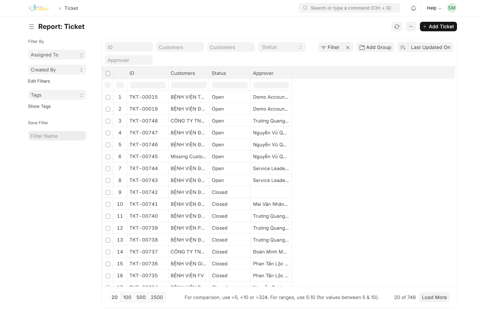
Bước 1.2 — Điền thông tin Ticket
- Naming Series — giữ mặc định TKT-.##### trừ khi quy trình nội bộ quy định khác.
- Customers — chọn một hoặc nhiều cơ sở y tế / khách hàng (bắt buộc ít nhất một).
- Status — Open hoặc Closed.
- Approver — chọn Trưởng nhóm hoặc Quản lý dịch vụ (xem bảng vai trò ở trên).
- CSEs — chọn một hoặc nhiều kỹ sư dịch vụ tham gia ticket; bắt buộc có ít nhất một người.
- Plan Start Date / Plan End Date (khối Schedule) — tùy chọn; khi nhập đủ cả hai, chỉ các job Preventive Maintenance có Plan Start/End Date trên Service Job phải nằm trong phạm vi ngày này (QC, Update deadline, … không bị ràng buộc theo Ticket).
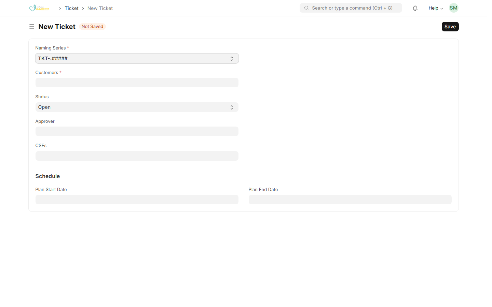
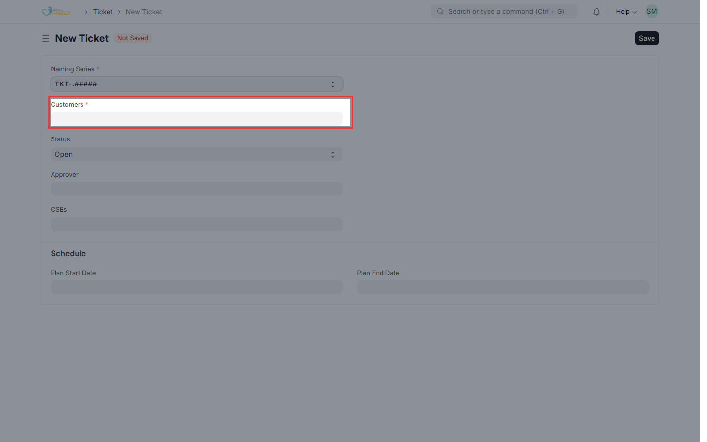
Bước 1.3 — Lưu Ticket
Nhấn Save. Ghi nhớ mã Ticket (ví dụ TKT-00001) — bạn sẽ gắn mã này khi tạo Service Job.
2. Tạo Service Job
Ai thực hiện: Manager và Leader — tạo/sửa/xóa mọi Service Job. Service User — được tạo job mới và sửa/xóa job khi bạn nằm trong CSEs của job đó (chi tiết).
Mỗi job là một công việc cụ thể (QC, bảo trì, hỗ trợ, …) thuộc cùng Ticket. Có thể tạo nhiều job cho một Ticket.
Bước 2.1 — Mở form Service Job
Tìm Service Job trên Desk → + Add Service Job. Hoặc từ Ticket đã lưu: Connections → Service Job → +.
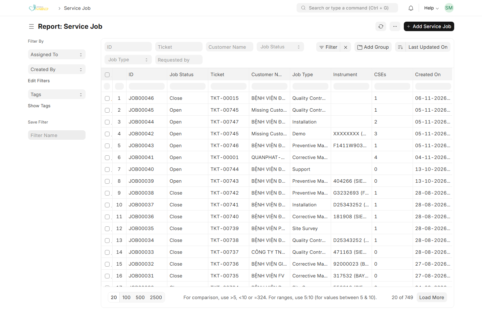
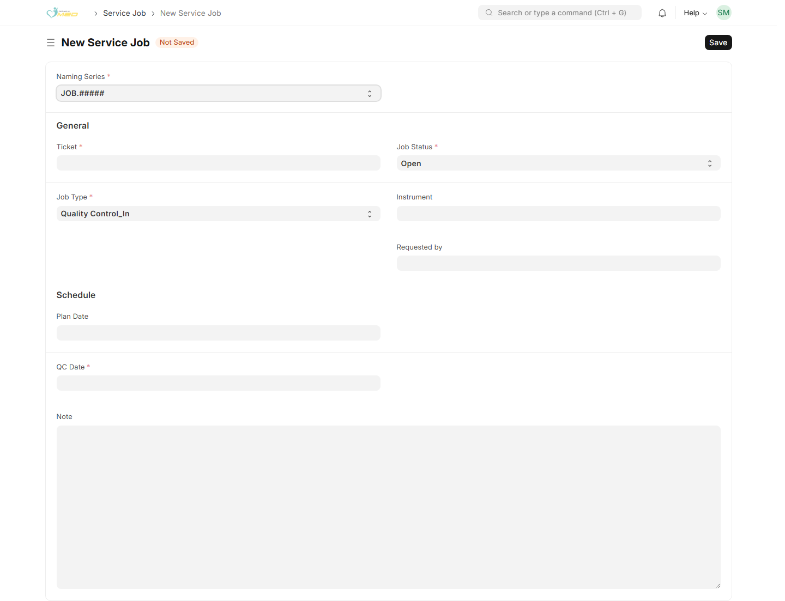
Bước 2.2 — Gắn Ticket và thông tin chung
- Ticket (bắt buộc) — chọn Ticket vừa tạo.
- Customer — chọn một khách hàng trong danh sách Customers của Ticket (bắt buộc). Nếu ticket chỉ có một khách hàng, hệ thống có thể tự điền.
- Job Status — thường Open khi bắt đầu; chuyển Close khi hoàn tất (Trưởng nhóm / Quản lý dịch vụ, hoặc kỹ sư CSE được giao trên job).
- Job Type — loại công việc (QC, PM, CM, Support, …).
- Requested by — tùy chọn; người yêu cầu (Sales / Sales Manager / Sales Leader hoặc BU Manager); chỉ chọn được user thuộc các vai trò đó.
- Instrument — thiết bị liên quan (nếu có).
- CSEs — chỉ hiện sau khi chọn Ticket. Danh sách gợi ý chỉ gồm CSE đã khai trên Ticket; không thể chọn kỹ sư ngoài ticket.
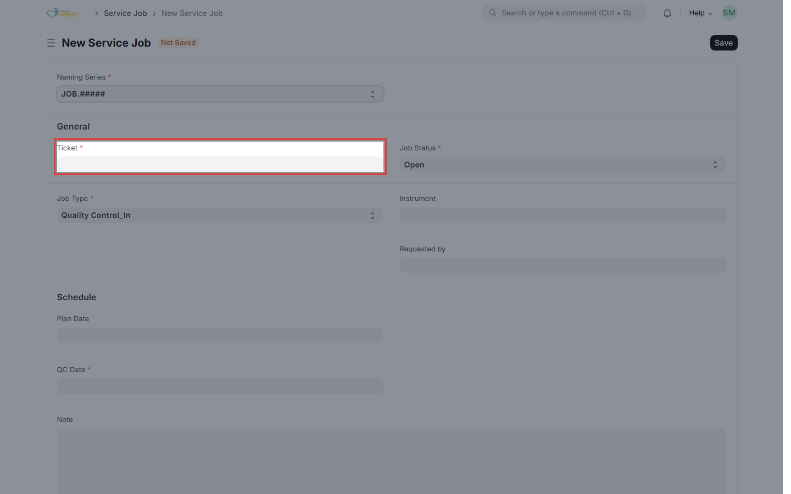
Bước 2.3 — Khối Schedule (theo Job Type)
Service Job dùng bốn ô ngày chung trong khối Schedule. Khi đổi Job Type, hệ thống đổi nhãn, ẩn hoặc bắt buộc từng ô cho đúng loại công việc (ví dụ QC chỉ còn Plan Date + QC Date; lắp đặt chỉ Start/End thực tế).
Tóm tắt theo loại (nhãn trên form):
| Job Type | Schedule trên form | Ghi chú |
|---|---|---|
| Preventive Maintenance | Plan Start / Plan End; hàng 2: Actual Start / Actual End | Plan phải trong phạm vi Ticket (nếu Ticket có đủ hai ngày plan) |
| Corrective Maintenance | 1st On Site Arrival · On Site Repair | Hai mốc nằm trong Schedule (Actual); không còn ô ngày riêng trong Details |
| Update | Deadline for Update · Update Completed Date | Completed Date thường bắt buộc khi lưu |
| Quality Control In/Out, Demo, Meeting… | Cặp Plan Date + ngày thực hiện (QC Date, Demo Date, …) | Không ràng plan theo Ticket |
| Installation, Training, Site Survey, Support | Chủ yếu Start / End thực tế (hoặc Support Start/End) | Một số loại bắt buộc đủ Start (và End tùy loại) |
Khi điền cả hai ngày “plan” đang hiển thị: ngày kết thúc không được sớm hơn ngày bắt đầu. Tương tự với cặp Actual khi cả hai đều hiện và có giá trị.
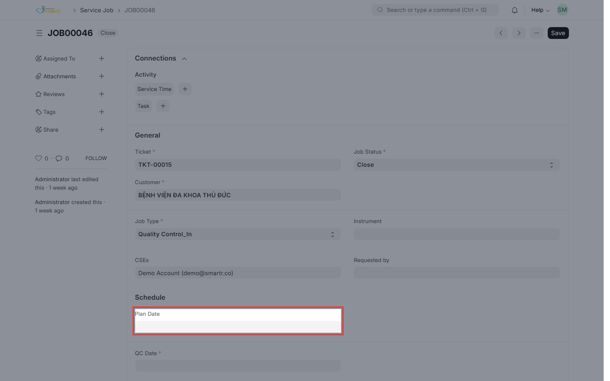
Sau khi đổi Job Type, nếu layout Schedule lệch, làm mới trình duyệt (Ctrl+Shift+R), đặc biệt sau khi admin vừa cập nhật app.
Bước 2.4 — Chi tiết CM, Update & lưu
Điền khối Details theo Job Type (liên kết QC / Installation Note / Maintenance Visit, loại Support, …).
- Corrective Maintenance — Problem Description (một dòng); hàng 2: Breakdown Date và System Condition; hàng 3: CM Support Type / Resolution Type; hàng 4: Support Long Text / Resolution Long Text. Ngày đến / sửa tại site: dùng Schedule (1st On Site Arrival, On Site Repair).
- Update — thêm Update Number và Update Description (mô tả bản cập nhật); deadline và ngày hoàn tất ở Schedule.
- Các loại khác — giữ quy tắc liên kết bảo trì/QC như trước; thời gian ghi ở Schedule, không tách field ngày lẻ trong Details.
Nhấn Save.
3. Tạo Service Time
Ai thực hiện: Service User — tạo giờ và sửa/xóa bản ghi của chính mình (CSE Name = bạn). Manager và Leader — tạo/sửa/xóa mọi Service Time (bảng tóm tắt).
Service Time ghi nhận từng khoảng thời gian làm việc của một CSE trên một Service Job (đi lại, làm tại site, hỗ trợ điện thoại, …).
Bước 3.1 — Mở form Service Time
Tìm Service Time → + Add Service Time.
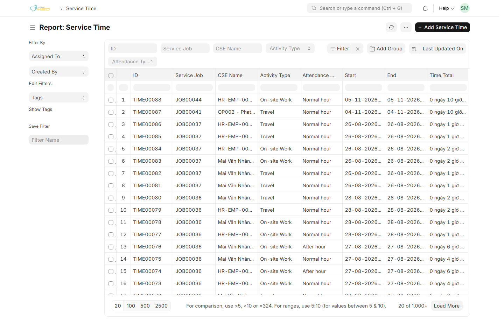
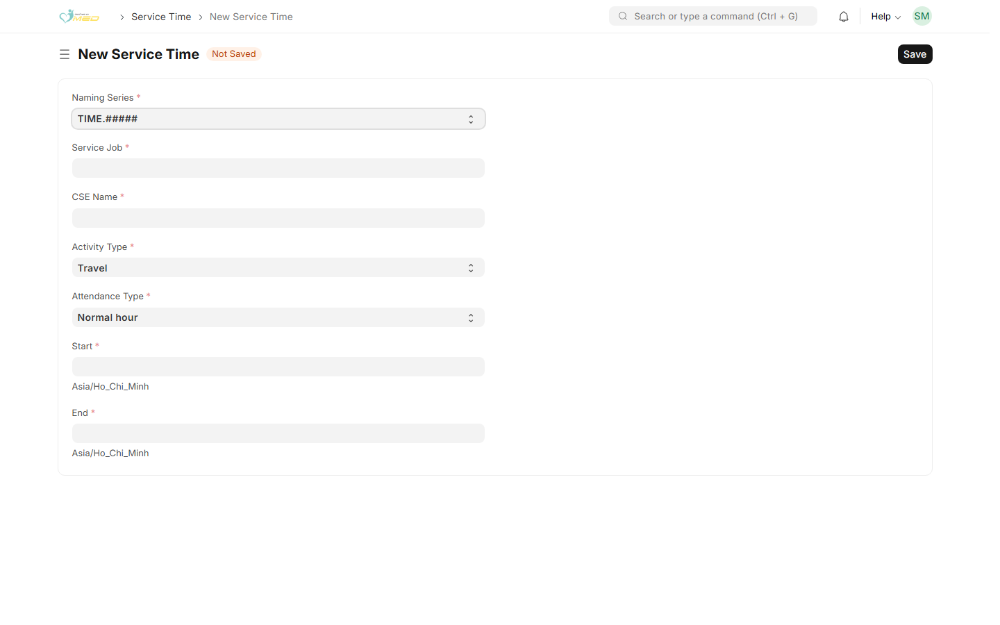
Bước 3.2 — Gắn Service Job và CSE
- Service Job (bắt buộc) — chọn job cần ghi giờ.
- CSE Name (bắt buộc) — chỉ chọn được kỹ sư thuộc CSEs của job đó. Nếu job chưa có CSE, bổ sung CSE trên Service Job trước.
- Activity Type — ví dụ Travel, On-site Work, Phone Support, …
- Attendance Type — Normal hour, After hour, hoặc Holiday.
- Start / End — thời điểm bắt đầu và kết thúc; Time Total tính tự động khi lưu.
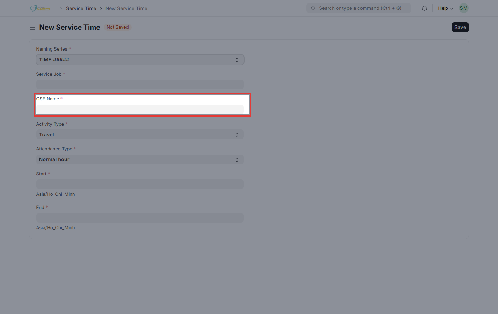
Bước 3.3 — Lưu Service Time
Nhấn Save. Lặp lại bước 3 cho các khoảng giờ / CSE khác trên cùng job hoặc job khác cùng Ticket.
Kết quả mong đợi
- Đúng phân vai: Manager — Ticket + Job; Leader — đọc/sửa Ticket (Approver), Job; User — đọc Ticket, tạo/sửa Job được giao (+ Job Status), ghi Service Time.
- Ticket lưu với Customers (≥1), Status, Approver (Leader/Manager) và ít nhất một CSE (User/Leader).
- Mỗi Service Job chọn đúng một Customer thuộc Ticket; Instrument (nếu có) lọc theo Customer trên job.
- Nhiều Service Job cùng trỏ một Ticket; kỹ sư trên từng job chỉ được chọn trong danh sách CSE của Ticket; Schedule hiển thị đúng nhãn theo Job Type; ràng buộc plan với Ticket chỉ áp dụng Preventive Maintenance.
- Nhiều Service Time trỏ một Service Job; mỗi dòng ghi đúng một kỹ sư (CSE Name) đã có trên job đó.
- Trên Ticket, badge Service Job trong Connections phản ánh số job đã tạo.
Sau khi có dữ liệu, quản lý dịch vụ có thể xem tổng hợp tại Service Job Report (số phiếu công việc) và Service Time Report (tổng giờ làm việc).
Xử lý sự cố thường gặp
| Triệu chứng | Nguyên nhân có thể | Cách xử lý |
|---|---|---|
| Service User cần tạo Ticket | User không tạo/sửa Ticket | Nhờ Service Manager (hoặc Leader nếu là Approver) tạo/sửa Ticket và danh sách Customers/CSEs |
| Service User cần job mới | User có thể tạo Service Job | Tạo job, chọn Ticket (đọc được), Customer trong phạm vi ticket, CSEs trên job |
| Lỗi khi chọn Approver | User không có vai trò Leader/Manager | Chọn user có iMED Service Leader hoặc iMED Service Manager |
| Không lưu được Ticket — thiếu CSE | Chưa chọn CSEs | Thêm ít nhất một CSE (Service User hoặc Service Leader) |
| Không thấy trường CSEs trên Service Job | Chưa chọn Ticket | Chọn Ticket trước |
| Không chọn được CSE ngoài ticket trên job | Theo quy định — job chỉ dùng kỹ sư đã khai trên Ticket | Sửa Ticket, thêm CSE cần thiết, lưu rồi chọn lại trên job |
| CSE Name trên Service Time trống / không đúng người | Chưa chọn job hoặc CSE không thuộc job | Chọn Service Job; đảm bảo CSE đã có trong CSEs của job |
| Không lưu Service Job — Schedule | Plan End sớm hơn Plan Start (hoặc Actual End sớm hơn Actual Start) | Chỉnh lại ngày hoặc xóa một trong hai ô của cặp đang hiển thị |
| Không lưu PM — Plan ngoài Ticket | Job Preventive Maintenance có Plan ngoài Plan Start/End Date của Ticket | Điều chỉnh plan trên job hoặc mở rộng ngày plan trên Ticket (Manager/Approver) |
| QC/Update lưu được dù deadline ngoài Ticket | Đúng thiết kế — chỉ PM bị ràng plan theo Ticket | Không cần sửa; PM mới cần nằm trong phạm vi Ticket |
| Đổi Job Type mà Schedule trống / nhãn lệch | Cache JS/CSS hoặc form chưa refresh | Ctrl+Shift+R; đổi lại Job Type một lần; nhờ admin bench build --app imed_crm nếu vừa nâng cấp |
| Ticket read-only — Customers/CSEs dính một dòng ID | Form chỉ đọc (Service User) | Chạy bench build --app imed_crm và làm mới trình duyệt; trên form read-only hệ thống hiển thị tên từng dòng |
| Không lưu Service Job — Customer | Customer không thuộc Ticket | Chọn Customer nằm trong Customers của Ticket; hoặc nhờ Manager/Approver bổ sung khách hàng trên Ticket |